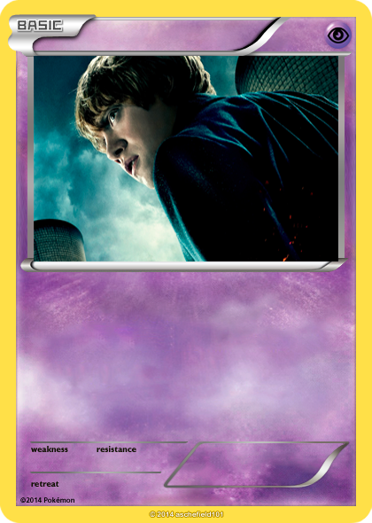
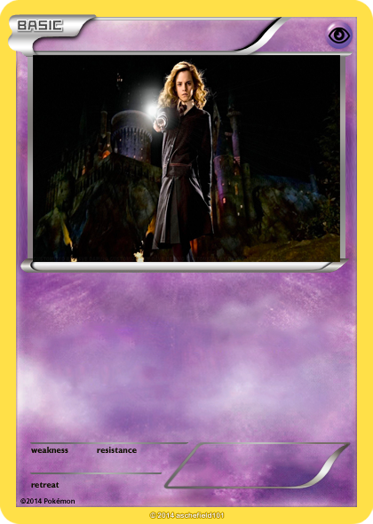
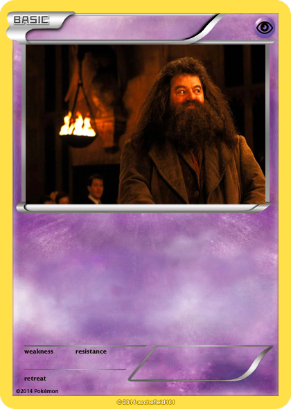
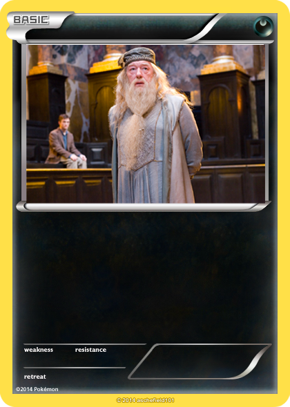

Histoire
Harry Potter, un jeune sorcier orphelin, a découvert sa véritable destinée à l'âge de onze ans lorsqu'il a reçu sa lettre d'admission à l'école de sorcellerie Poudlard. Né de parents sorciers célèbres, Harry a survécu à l'attaque du redoutable sorcier noir, Lord Voldemort, alors qu'il était encore un bébé, lui laissant une cicatrice en forme d'éclair sur le front. À Poudlard, Harry se lie d'amitié avec Ron Weasley et Hermione Granger, formant un trio inséparable prêt à relever tous les défis.

Harry Potter
Cartes similaires



